Role
UX Researcher and UI Designer
Duration
Aug 17, 2020 - Oct 12, 2020
8 weeks
Team
Research with a 6 people team
Design individually
Project description
Since school started on August 17, more than 200 students and faculties at the University of Miami have contracted the Coronavirus. It is very important to control the spread of the Coronavirus on campus. This project is a location-based App focused on solving the problem of the spread of the Coronavirus, designed for a Human-Centered Design (HCD) class, Fall 2020.
Goals
Help students find protection resources on campus
Help students avoid contact with many people
Helps students to wash their hands regularly
Let students know when there are less people in a specific area
Track of UM covid confirmed cases in a high risk area on campus
Process
- User research and interviews
- Competitive analysis
- Concept map
- User flow
- Site map
- Wireframes
- Prototype
Target User
UM students
Users cares about their privacy
Users when there are less people in a specific area
Don’t trust other people on campus
People want to determine the safety of a place before coming to the place
Research
Sample size: 18 participants in total
42% female 57% male
9 participants user segment A (students taking in-person or hybrid classes)
5 participants for user segment B (students taking only online classes)
4 participants for user segment C (faculty)
Affinity Diagrams
We grouped our research findings in Affinity Diagrams
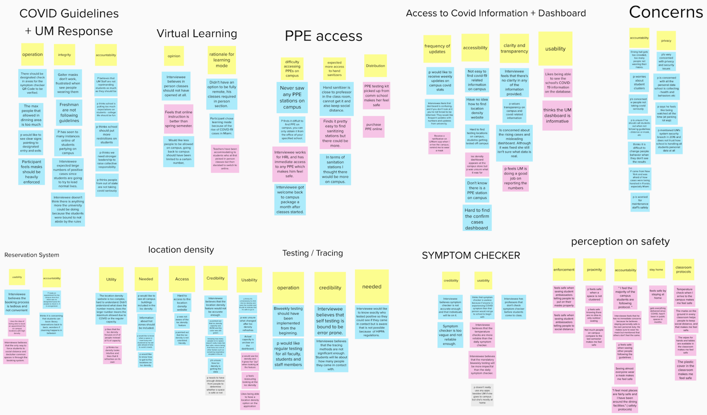Research Finding
Students generally feel safe when seeing sanitization being done
Want information on hot zones Think it would be useful to know where people are contracting COVID on campus
Think that if biweekly testing is made mandatory it would more impactful
Concerned about people not taking covid seriously and unable to see where the virus have / could have been
Would like to see testing sites near / on campus and more campus buildings in the location density feature
Location density
Peak time feature
The max capacity value is alarming
Accessibility for color blindness
Unsure what changed after the location density refreshes
Way finding to the places on location density
How could we address the these concerns?
We want to design a interactive campus map:
Real-time location density feature with all the buildings / common spaces on campus
Wayfinding to the campus buildings and essential resources (PPE, hand sanitizers, testing sites, etc.)
Peak time feature showing when a space is most busy / clustered
Notification system for COVID information such as the number of cases on campus
Product description
The App Stay Safe UMIAMI will help UM students to find the protection resources, testing locations on campus, avoid high risk area on campus and update the population density of specific locations on campus in real time.
There is a map of the Coral Gable campus of the University of Miami in this App, and we will mark the locations of different buildings, PPE stations and hand sanitizer stations on the map. When students want to find a PPE station or a hand sanitizer station on campus, they can use our app to navigate them to the station.
In some populated locations on campus, such as libraries, restaurants, gyms, bookstores, etc., we will mark the density of people using colors and percentages next to the building on the map.
Concept map
I created a concept map to help me organize my findings about how to keep safe on campus.
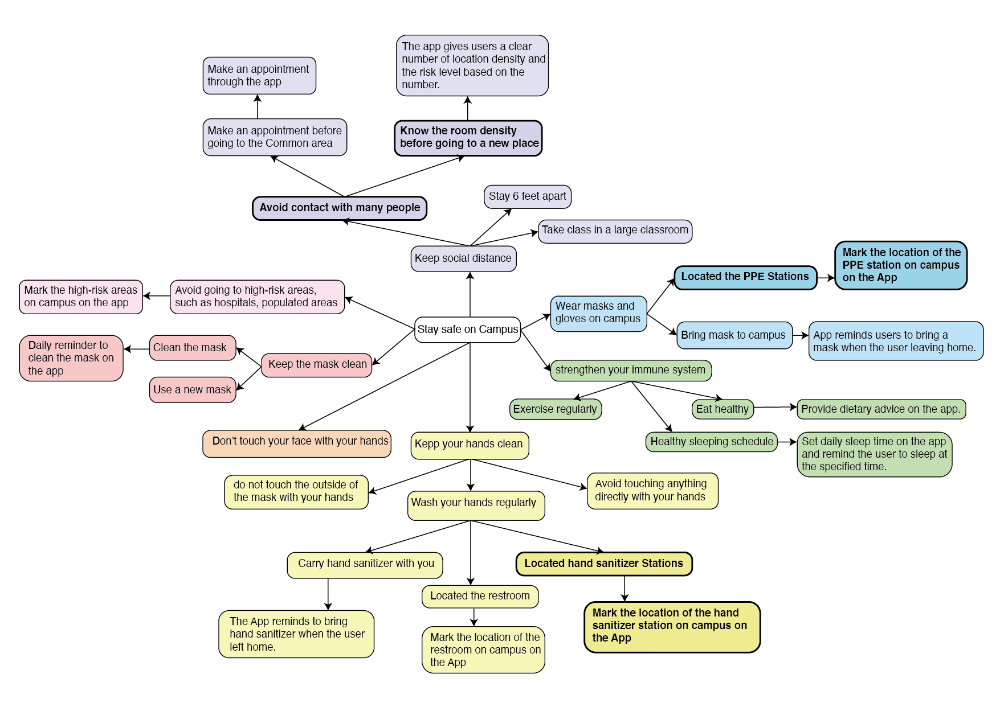Features and functions
Location Density
In some populated locations on campus, such as libraries, restaurants, gyms, bookstores, etc., The APP marks the density of people using colors and give user suggestions next to the building on the map.
Users will see more information related to the location after they tap the icon near the location. Such as distance, location density, peak time, and user can also see a “Make Appointment” Button. Users are able to make an appointment through the app.
PPE Station
Mark the stations; Navigation to the station; Shows available protective equipment;
Hand sanitizer stations
Mark the stations; Navigation to the station; How much hand sanitizer left in a hand sanitizer station;
Restrooms
Mark the stations; Navigation to the station;
Testing stations
Mark the stations; Navigation to the station; Check the Peak time of the station; Make appointment to the selected testing station;
High risk area
Mark the high risk area; Check confirm cases in the selected high risk area;
Task Flow
After I finished research, I started to work on the task flow, which was divided into 6 tasks:
- Check location density in the Shall Student Center, and make an appointment.
- Check available protective equipment in a PPE station and get a route to the selected PPE station.
- Find a restroom on campus and get a route to the selected restroom.
- Check available Hand sanitizer in a Hand sanitizer station and get a route to the selected Hand sanitizer station.
- Find the High risk area on campus.
- Make an appointment for a coronavirus test on campus.
Site Map
After I finished task flow, I am ready to create a sitemap that visually present an overview of my interface design.

Design sketches
The sketch helped me reorganize my thoughts, how can I include all the functions?and how to present the functions. This sketch is also an important reference for my wireframe design.
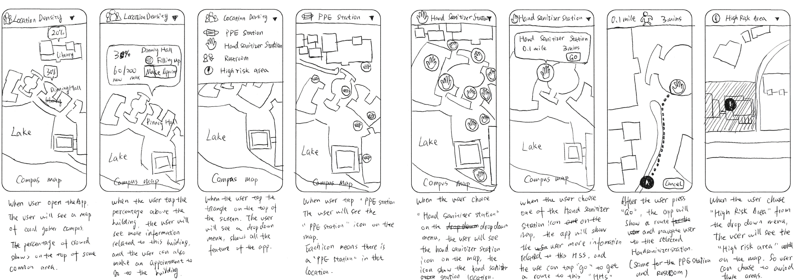Wireframes
According to the sketch, I made a first version of the wireframe design, I am trying to made the app simple and easy to use. I use Adobe XD to create the following pages.
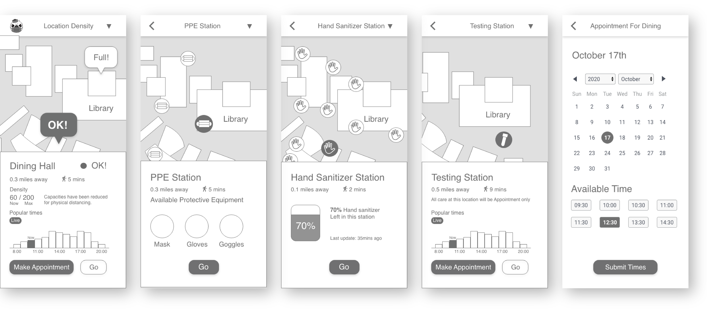Annotated Wireframes
The pages below are the annotated wireframes for the app design.


The Final Design
After all the research and wireframs I finnaly created the prototype. The prototype is very similar to the wireframes, and since the app is made for Students from University of Miami, so I was tring to match the UMiami Color.
The icons are download from iconfinder. The map is download from miami.edu.
Below are some of the pages of the final prototype.
 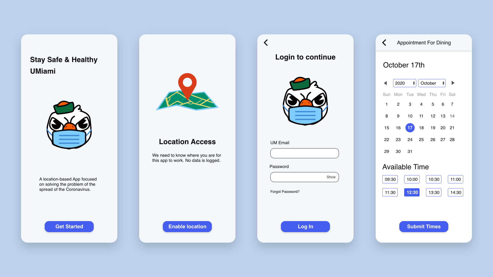
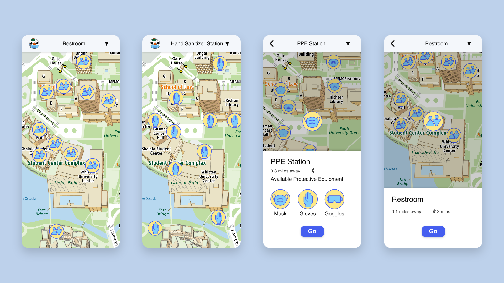
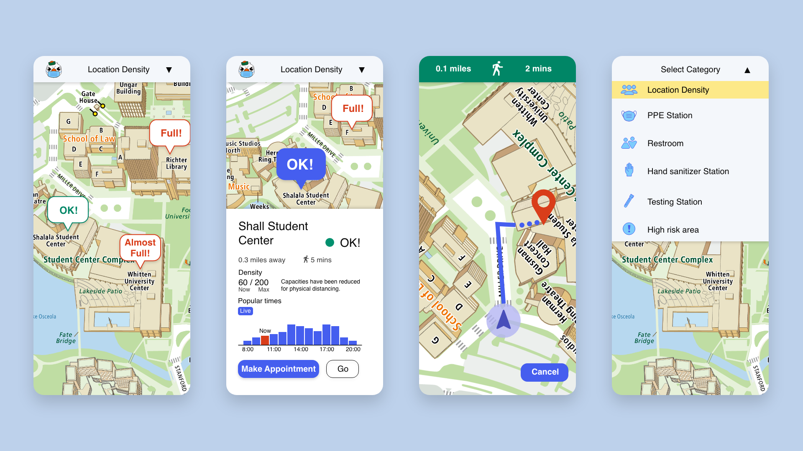
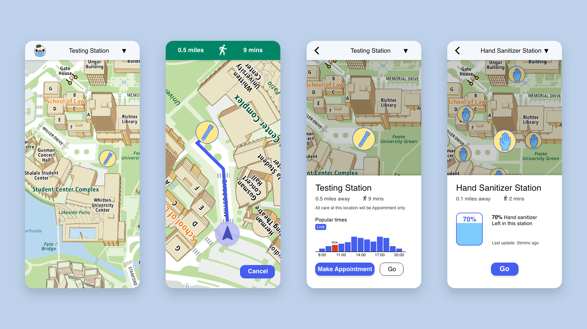
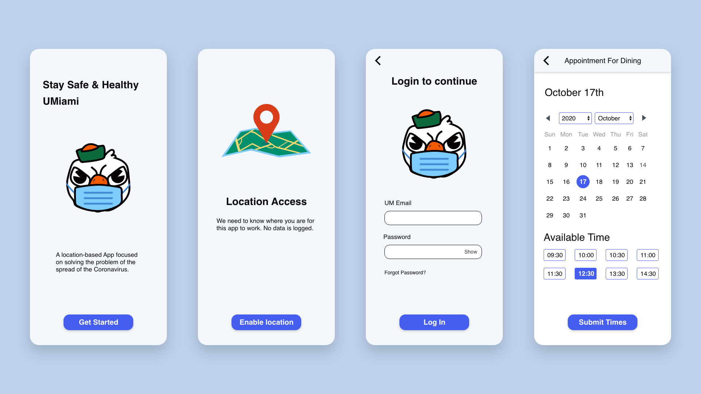
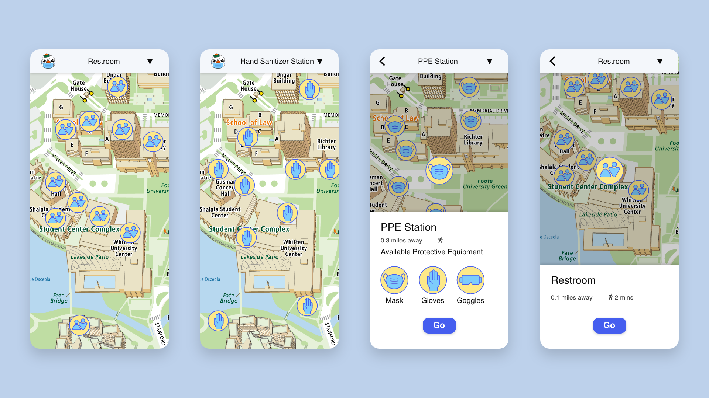
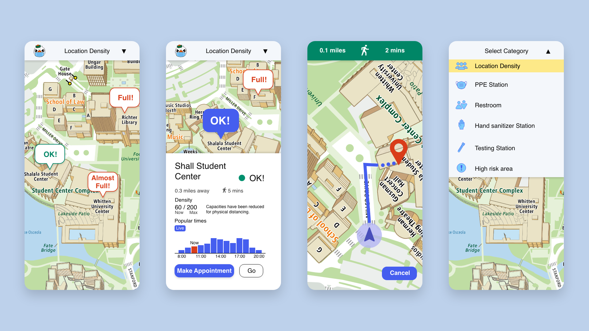
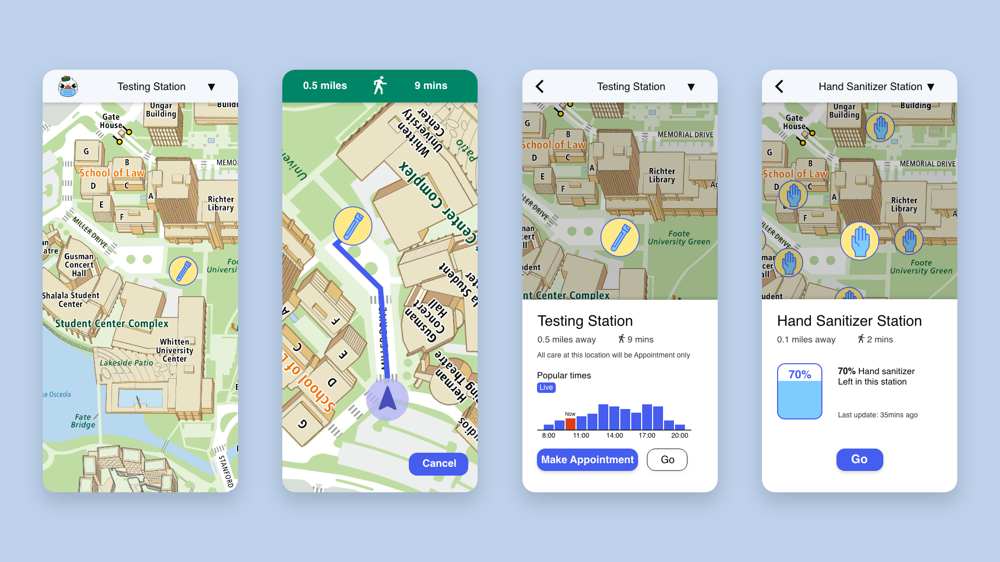